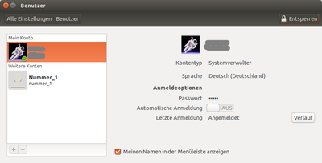
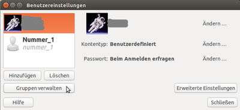

Benutzer und Gruppen Ubuntu
Dieser Artikel wurde für die folgenden Ubuntu-Versionen getestet:
Ubuntu 16.04 Xenial Xerus
Ubuntu 14.04 Trusty Tahr
Unter Ubuntu steht ein eigenes grafisches Werkzeug zur Benutzerverwaltung unter der Desktop-Umgebung Unity bereit.
Nutzer anlegen¶
Die Benutzerverwaltung ist – im Vergleich zu früheren Versionen – stark abgespeckt worden. Es besteht standardmäßig nur die Möglichkeit, Benutzer anzulegen. Das Ändern der Gruppenzugehörigkeit über eine grafische Oberfläche ist nicht mehr möglich, dazu muss die Anwendung gnome-system-tools installiert werden (siehe Gruppenzugehörigkeit verwalten).

Die Standard-GUI von Unity und der GNOME-Shell zur Benutzerverwaltung ist über das Systemmenü und dann "Systemeinstellungen -> Benutzerkonten" aufrufbar (siehe GNOME3 Systemeinstellungen). Um weitere Aktionen vorzunehmen, müssen zuerst durch einen Klick auf "Entsperren" und die Eingabe des Passworts die Einstellmöglichkeiten freigegeben werden. Dies ist nur für Nutzer möglich, die Systemverwalter-Rechte haben.
Nach dem Entsperren können neue Nutzer angelegt oder natürlich auch vorhandene gelöscht oder modifiziert werden. Auf der linken Seite des Fensters sieht man die vorhandenen Konten.
Ein Klick auf das "+"-Symbol links unten legt ein neues Konto an. Hier werden dann der Name und der gewünschte Nutzername abgefragt. Weiterhin kann zwischen den beiden Kontotypen "Standard" und "Systemverwalter" gewählt werden. Danach muss das Konto noch aktiviert werden, indem ein Passwort festgelegt wird. Dazu klickt man auf den Schriftzug "Konto ist deaktiviert" und gibt das gewünschte Passwort ein. Alternativ kann auch festgelegt werden, dass der neue Nutzer sich ohne Passwort anmelden kann, was bei Mehrbenutzersystemen aber nicht zu empfehlen ist.
Soll ein Nutzer gelöscht werden, so wählt man diesen zuerst aus und klickt dann auf das "-" links unten im Fenster. Daraufhin erscheint ein Dialog, in dem abgefragt wird, ob die Benutzerdaten ebenfalls gelöscht oder behalten werden sollen. Nach der Auswahl der entsprechenden Option wird das Benutzerkonto gelöscht.
Gruppenzugehörigkeit verwalten¶

Die grafische Oberfläche bietet standardmäßig keine Möglichkeit, die Gruppenzugehörigkeit(en) zu verwalten. Ohne Nachinstallation von Programmen muss dies über das Terminal erfolgen. Es kann aber das Paket
gnome-system-tools
 mit apturl
mit apturl
Paketliste zum Kopieren:
sudo apt-get install gnome-system-tools
sudo aptitude install gnome-system-tools
nachinstalliert werden, um die Gruppenzugehörigkeiten grafisch zu verwalten. Anschließend muss man sich einmal neu anmelden, um die Benutzerdaten des Systems einmalig einzulesen. Das grafische Werkzeug findet sich nun im Startmenü unter "Benutzer und Gruppen".
 Übersichtsartikel
Übersichtsartikel- Erstellt mit Inyoka
-
 2004 – 2017 ubuntuusers.de • Einige Rechte vorbehalten
2004 – 2017 ubuntuusers.de • Einige Rechte vorbehalten
Lizenz • Kontakt • Datenschutz • Impressum • Serverstatus -
Serverhousing gespendet von